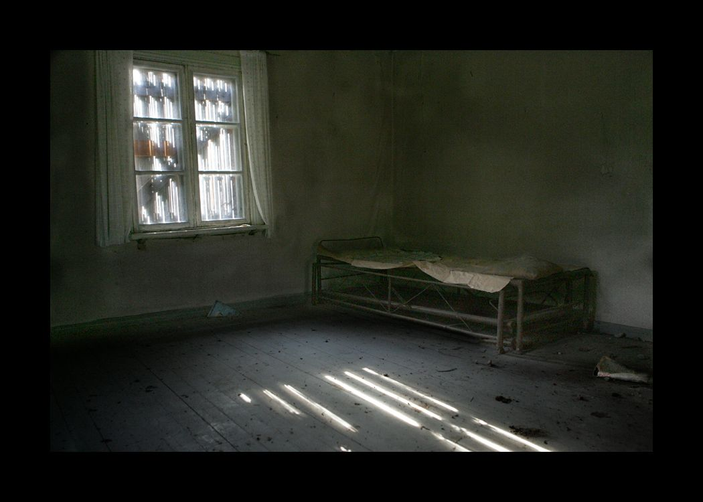

I remember her, sitting at the balcony, sipping her favorite hot coffee with tiny bit of sugar, admiring the beautiful showers from the dark clouds. I sat with her, lost in her pretty soul, while her mind was all gone from reality, venturing into deep abyss of her dark past.
She loved dark. She often said that to me.
"Dark. It reminds me what I had. It's deep rooted in my heart. And my soul is too afraid of the light. So I prefer dark", she used to say.
I never understood what she meant. All I could do is I gazed into her eyes, questioning the meaning of this to which she used to giggle and say, "You are too naive too understand the beauty of words, the metaphor of life, and me."
True. I never understood her writings. Neither understood life. And she? She was a brilliant mess of billion pieces of her shattered heart, broken beyond repair, while all the scars summed up to one man, the one she unconditionally loved, the one whom I can never forgive, the one I never met, and the one I would have called my father, but he was never there.
Few times, I discovered her scars hidden under the long sleeves. Curiously I inquired about her deep bleeding wounds to which Ma replied "It's an escape from pain, a way to save my soul who is in terrible pain."

I used to get angry, and ask her to live for me, and she said, "It's you for whom I am living son otherwise I would have welcomed death long ago."
She was my mother, tried to be one, but never was one like my friends had. I missed home, a home I never had but I longed for. She too craved for a home. A home with me and the man she loved, but was trapped inside this wailing house with me.
Nights were miserable for her. Some days I could hear her sob, and the other days I could hear her cry. Worst were the days when creepy silence prevailed, as I could hear my heart beat and even my tears escaped my eyes.
When my grandma was alive, she used to tell me stories of my mother. She was never like this, she used to chatter like an innocent child, lived life like birds, flying high among the clouds in the playground of blue sky. She was full of life, and I used to imagine her living that way. She was one of the prettiest soul wandering in this earth, she was a child of the fairies.
And I missed the child of fairies whom I never saw.
Her wardrobe was full of unnecessary items, all belonging to my father and she used to spend her day, smelling his shirts, sometimes hugging his cricket bat, admiring his gray watch, and sometimes simply sitting in front of that and gazing his wardrobe.
And then was today. I was with two of my closest friends, and a couple of neighbors and a priest. Mom's pale body was sleeping in the coffin and I could see peace for which she always longed for finally etched in her beautiful face. I could hear the priest chanting, but I couldn't understand those words. Everyone said few empty words to me, to her soul, who would have been wandering in this vast cosmos.
They gave me the responsibility of writing her epitaph. I could never write as well as her. Her words spoke for themselves while mine rested on paper, waiting to be read out. They covered her final resting place with mud and placed a white slab on it.
"She deserved more than a thousand broken stars, a million shattered dreams, and billions pieces of shivered heart", it read.
By: ADITYA SRIVASTAVA
Published on JUNE 17, 2020
Follow me